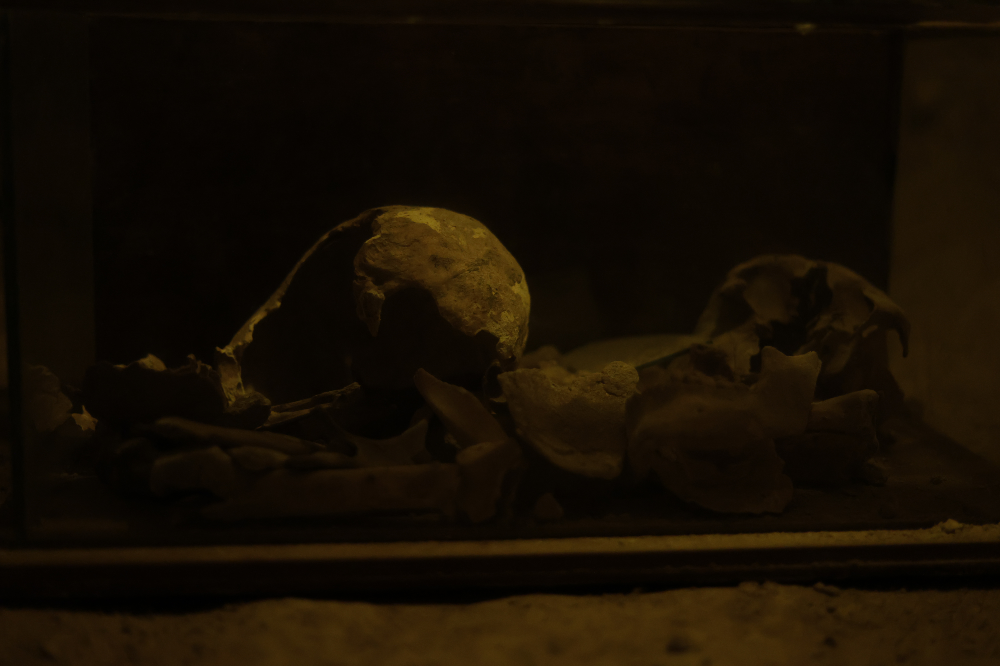
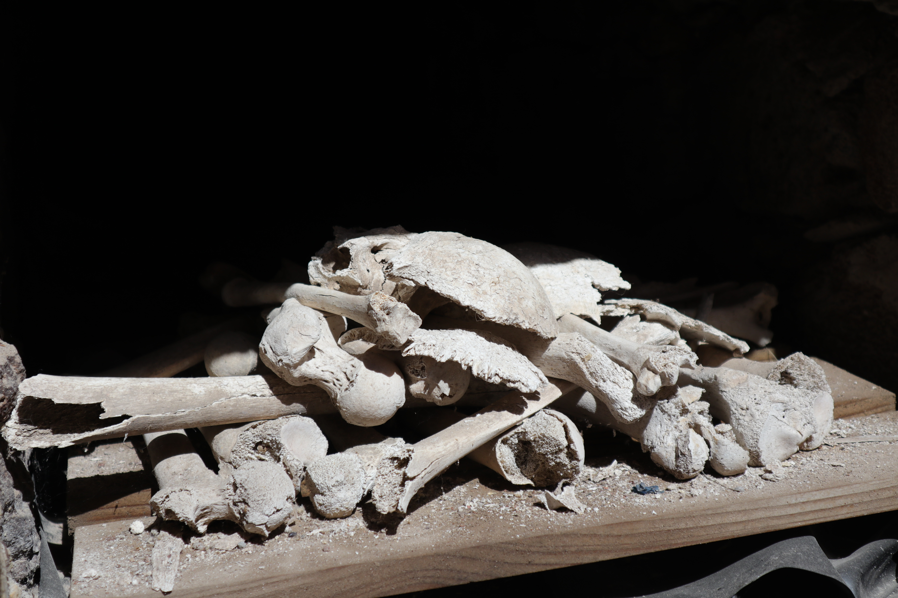
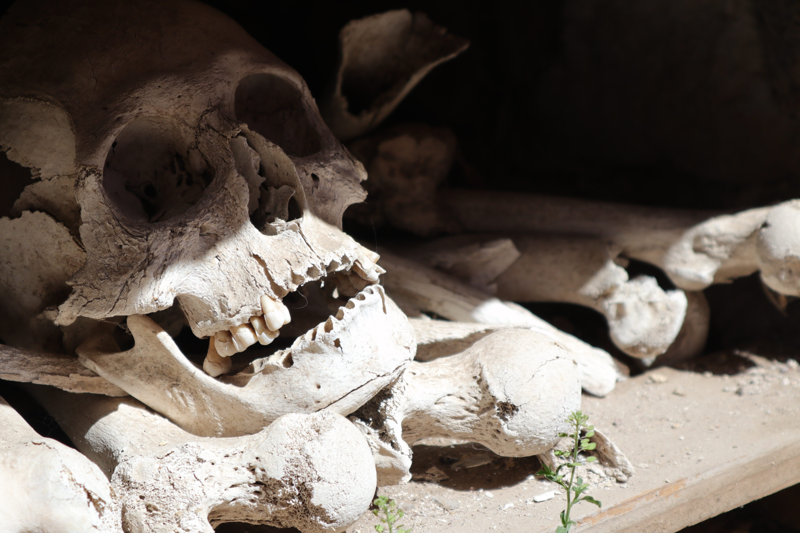
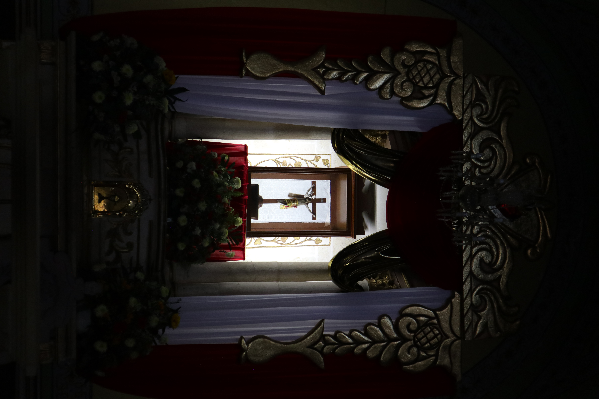
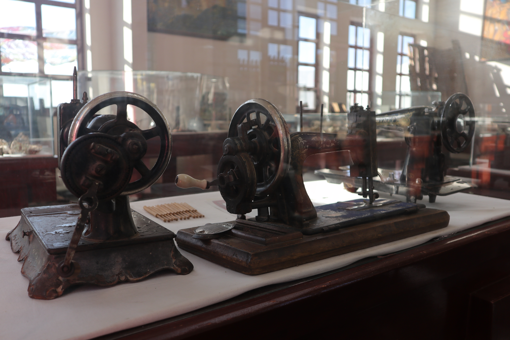
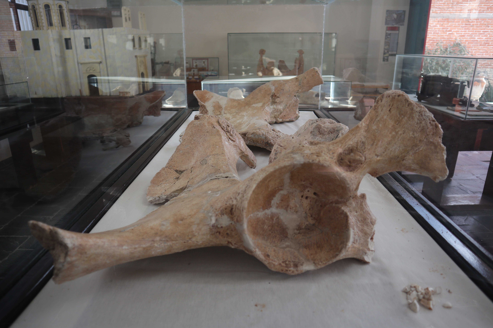
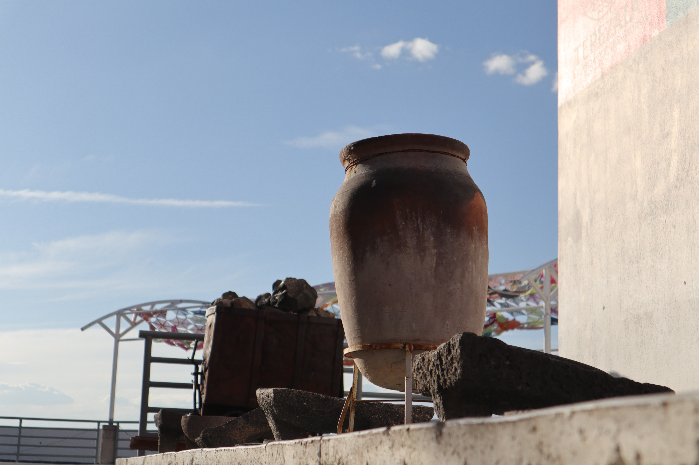
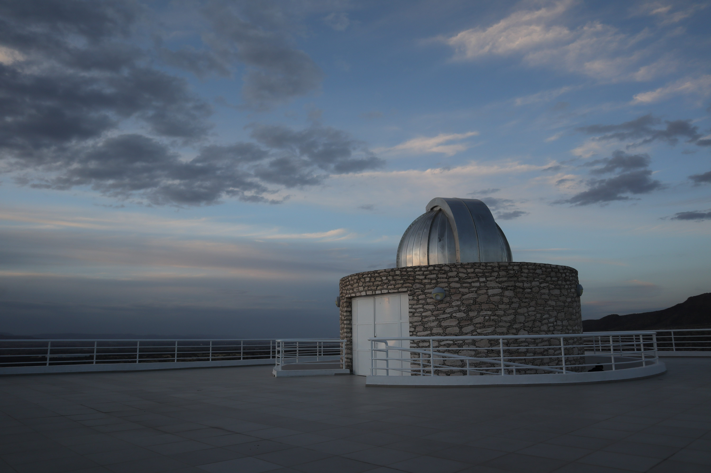

A tan solo 35 minutos de Pabellón de Arteaga, Real de Asientos te espera con calles llenas de historia, túneles subterráneos y rincones que cuentan su pasado minero. Es el lugar perfecto para una escapada tranquila y cultural, ideal para disfrutar una mañana diferente.




Explora antiguos pasajes mineros llenos de historia y misterio, donde conocerás el pasado de la región en un recorrido guiado único.
Qué hacer:
Melchor Ocampo 8, 20710 Real de Asientos, Ags.
Lunes a Viernes: 10:00 - 14:00 y 16:00 – 18:00
Sábados y Domingos: 10:00 - 18:00
$15 adultos / $10 niños




Un lugar lleno de historia donde puedes conocer antiguas tumbas y descubrir las tradiciones que forman parte de la esencia de Real de Asientos.
Qué hacer:
Pzla. Guadalupe, 20714 Real de Asientos, Ags.
10:00 – 18:00
$15 adultos / $10 niños



Un rincón tranquilo rodeado de naturaleza, ideal para relajarte, disfrutar del paisaje y capturar fotografías increíbles al atardecer.
Qué hacer:
20715 Asientos, Aguascalientes
Todos los días: 10:00 – 18:00
$15 adultos / $10 niños
A solo 20 minutos de Pabellón de Arteaga, San Francisco de los Romo te invita a disfrutar del inconfundible sabor de sus famosas carnitas, con deliciosos tacos surtidos y exquisitas gorditas tradicionales recién hechas. Todo en un ambiente auténtico, lleno de tradición y sabor, ideal para una escapada por la mañana o al mediodía.
Una parada imperdible para disfrutar carnitas tradicionales, llenas de sabor y variedad, en un ambiente auténtico que refleja la esencia del municipio.
Benito Juárez Sur 211C, Panamericano, 20300 San Francisco de los Romo, Ags.
Todos los días: 08:00 – 19:00
Una deliciosa combinación de gorditas estilo Aguascalientes con carnitas tradicionales, perfecta para disfrutar una experiencia gastronómica completa y llena de sabor.
20300, Benito Juárez Sur 102C, Centro, San Francisco de los Romo, Ags.
Todos los días: 08:00 – 18:00
Una opción tradicional con sabor casero, ideal para quienes buscan disfrutar una comida deliciosa en un ambiente sencillo y con el auténtico sazón de Aguascalientes.
Benito Juárez Nte. 507-a, Centro, 20300 San Francisco de los Romo, Ags.
Todos los días: 08:00 – 19:30
Un lugar perfecto para comenzar el recorrido, con vistas panorámicas, aire fresco y un ambiente relajado junto al agua, ideal para disfrutar de un momento de tranquilidad en contacto con la naturaleza.
Qué hacer:
C. Pedro Domínguez 512, San José de Gracia, 20500 San José de Gracia, Ags.
Una experiencia única y memorable, donde el acceso en lancha y las impresionantes vistas convierten cada momento en una visita verdaderamente inolvidable.
Qué hacer:
Un entorno natural ideal para desconectarte de la rutina, caminar entre el bosque y disfrutar de la paz y la belleza del paisaje.
Qué hacer:
Un lugar lleno de historia donde podrás revivir uno de los momentos más importantes de la Independencia de México y conectar con el pasado de una manera única.
Qué hacer:
C. Pl. 24 de Enero 19, Zona Poniente, 20671 Pabellón de Hidalgo, Ags.
Lunes y Martes: Cerrado.
Miercoles - Domingo: 11:00 - 18:00
Un espacio tranquilo y lleno de encanto, ideal para caminar con calma, admirar la arquitectura y disfrutar del ambiente cotidiano del lugar.
Qué hacer:
C. Pl. 24 de Enero S/N, Zona Centro, 20400 Pabellón de Hidalgo, Ags.
Un lugar ideal para relajarte, dar un paseo o disfrutar de un picnic rodeado de naturaleza y un ambiente tranquilo.
Qué hacer:





Un espacio cultural donde podrás adentrarte en la historia minera y prehistórica del municipio, descubriendo piezas y fósiles que revelan el pasado fascinante del lugar.
Qué hacer:
20300, Benito Juárez Sur 102C, Centro, San Francisco de los Romo, Ags.
Todos los días: 08:00 – 18:00


Un escenario natural perfecto para disfrutar caminatas, admirar vistas panorámicas y vivir una experiencia única en contacto directo con la naturaleza.
Qué hacer:




Vive una experiencia mágica bajo el cielo nocturno, donde podrás admirar estrellas y planetas en un ambiente tranquilo que invita a maravillarte con la belleza del universo.
Qué hacer:
Lunes: Cerrado.
Martes - Domingo: 09:00 – 22:00